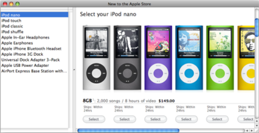
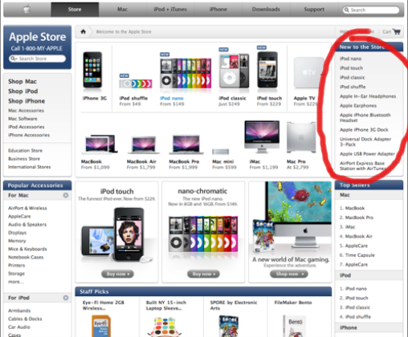

Please note: this article is part of the older "Objective-C era" on Cocoa with Love. I don't keep these articles up-to-date; please be wary of broken code or potentially out-of-date information. Read "A new era for Cocoa with Love" for more.
A Cocoa application driven by HTTP data
Here's a tiny application that queries a webpage via HTTP, parses and searches the response and presents the results in a neatly formatted window. In essence, it's what many Dashboard widgets and iPhone apps do but I'll show you how to do it in a regular Cocoa application.
Brought to you by FuelView, an iPhone application I wrote for fetching FuelWatch information in Western Australia.
Introduction
Most Dashboard widgets work by fetching data via HTTP and formatting the response for easy viewing. This type of widget does nothing your web browser can't do but because it's focussed on a specific goal, it can be faster and present a better experience within its more narrow bounds.
Similar but Cocoa
This fetch/parse/search/present behavior need not be limited to widgets. I'll show you how you can replicate this in a Cocoa application. The example I'll present will show the "New to the store" items from the Apple Store.
Here's a screenshot of this application in action:
The data presented in the application's window comes from the list of "New to the store" items on the http://store.apple.com webpage, as circled in the following screenshot:
The steps involved
As I've already stated, this type of web retrieval application requires the following steps:
- Fetch over HTTP
- Parse the response into a structured format
- Search the parsed response and extract the desired information
- Format and present to the user
Fetch over HTTP
NSURLConnection handles data transfer over HTTP in Cocoa. All you need to do is give it a URL to fetch and it make it happen.
You can drive an NSURLConnection synchronously using sendSynchronousRequest:returningResponse:error: (which admittedly takes less code than what I'm about to show you) but that will block the entire thread until the response is received (almost always a bad idea).
For a class with an NSMutableData member named responseData and an NSURL member named baseURL, here's how to fetch the page at http://store.apple.com into that data member asynchronously:
responseData = [[NSMutableData data] retain];
baseURL = [[NSURL URLWithString:@"http://store.apple.com"] retain];
NSURLRequest *request =
[NSURLRequest requestWithURL:[NSURL URLWithString:@"http://store.apple.com"]];
[[[NSURLConnection alloc] initWithRequest:request delegate:self] autorelease];For this asynchronous approach to work, the delegate object (self in this case) must also implement the following methods:
- (void)connection:(NSURLConnection *)connection didReceiveResponse:(NSURLResponse *)response
{
[responseData setLength:0];
}
- (void)connection:(NSURLConnection *)connection didReceiveData:(NSData *)data
{
[responseData appendData:data];
}
- (void)connection:(NSURLConnection *)connection didFailWithError:(NSError *)error
{
[[NSAlert alertWithError:error] runModal];
}
- (void)connectionDidFinishLoading:(NSURLConnection *)connection
{
// Once this method is invoked, "responseData" contains the complete result
}In addition to this required NSURLConnection functionality, the sample app implements another method here to track what the final URL will be (since redirections may occur).
- (NSURLRequest *)connection:(NSURLConnection *)connection
willSendRequest:(NSURLRequest *)request
redirectResponse:(NSURLResponse *)redirectResponse
{
[baseURL autorelease];
baseURL = [[request URL] retain];
return request;
}Having the correct base URL for the webpage will allow us to perform relative to absolute URL conversion below if needed.
Parsing and Searching an HTML document
The response from an HTTP request is normally HTML — a long chunk of text. In order to make useful sense of this, you'll want to use the right tools to extract useful information.
There are lots of examples of people using text searching and regular expressions to find data in webpages. These examples are doing it wrong.
NSXMLDocument and an XPath query are your friends. They really make finding elements within a webpage, RSS feed or XML documents very easy.
The following code is inserted in the body of the connectionDidFinishLoading: method shown above:
NSError *error;
NSXMLDocument *document =
[[NSXMLDocument alloc] initWithData:responseData options:NSXMLDocumentTidyHTML error:&error];
// Deliberately ignore the error: with most HTML it will be filled with
// numerous "tidy" warnings.
NSXMLElement *rootNode = [document rootElement];
NSString *xpathQueryString =
@"//div[@id='newtothestore']/div[@class='modulecontent']/div[@id='new-to-store']/div[@class='list_content']/ul/li/a";
NSArray *newItemsNodes = [rootNode nodesForXPath:xpathQueryString error:&error];
if (error)
{
[[NSAlert alertWithError:error] runModal];
return;
}The XPath query is the core of the search operation. Simple, yet incredibly adept at extracting data from a structured document.
This query here looks for all the "a" tags (HTML links) in the list under the "newtothestore" div.
Format and present to the user
In the sample application, the table view at the left of the window is populated from the NSArray named newItems on the NewItemsClient object (to which all methods discussed so far belong). Since the user interface has been configured in Interface Builder to handle this populating automatically, all that needs to be done is to update newItems in a Key-Value-Observing compliant fashion.
This code fragment should be inserted immediately below the previous code fragment:
[self willChangeValueForKey:@"newItems"];
[newItems release];
newItems = [[NSMutableArray array] retain];
for (NSXMLElement *node in newItemsNodes)
{
NSString *relativeString = [[node attributeForName:@"href"] stringValue];
NSURL *url = [NSURL URLWithString:relativeString relativeToURL:baseURL];
NSString *linkText = [[node childAtIndex:0] stringValue];
[newItems addObject:
[NSDictionary dictionaryWithObjectsAndKeys:
[url absoluteString], @"linkURL",
linkText, @"linkText",
nil]];
}
[self didChangeValueForKey:@"newItems"];The final result has the newItems array filled with absolute URLs and link text from the items in the "New to the store" list.
The user interface, as assembled in Interface Builder, handles the details of displaying the "linkText" from each item. A connector object tracks selection changes in the table and displays the "linkURL" of the selected item in the WebView.
You can download the complete XCode project for the example presented. It's XCode 3.1 but should also load in 3.0 (with a warning you can ignore).
Conclusion
I hope I've shown that the Dashboard widget niche of "small applications driven by web-retrieved data" is quickly and simply achievable in Cocoa.
The example fetched from HTML but the techniques would be similar or identical for RSS or general XML data fetched over HTTP.
Drawing gloss gradients in CoreGraphics
Streaming and playing an MP3 stream